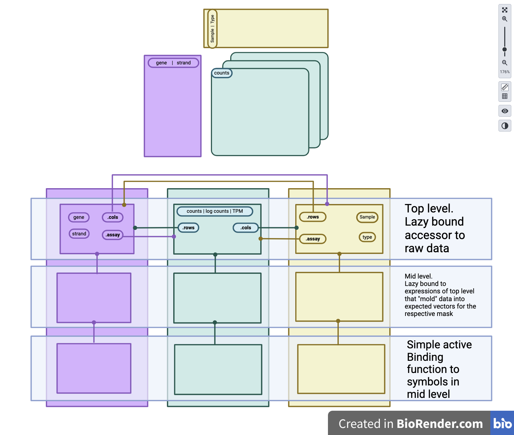

The goal of this repo is to design efficient abstractions to the SummarizedExperiment class such that using common dplyr functions feels as natural to operating on a data.frame or tibble. While the overall goal is for it to feel like a tibble operation, it would be smart to emphasize that certain data wrangling pipelines do not translate well to the structure of the SummarizedExperiment class.
Note: This repository is still under active development. Internal structure of classes and code organization is likely to change.
I will be using the following example data throughout this document:
library(SummarizedExperiment)
library(tidySEabstraction)
library(dplyr)
library(rlang)
library(tibble)
set.seed(1234)
se <- SummarizedExperiment(
list(counts = matrix(sample(1:20, 20), nrow = 5, ncol = 4)),
rowData = data.frame(gene = sprintf("g%i", 1:5),
length = rbinom(5, 100, runif(5)),
direction = sample(c("-","+"), 5, T)),
colData = data.frame(sample = sprintf("s%i", 1:4),
condition = rep(c("cntrl","drug"), each =2))
)
rownames(se) <- sprintf("row_%s", letters[1:5])
colnames(se) <- sprintf("col_%s", LETTERS[1:4])
assay(se, 'logcounts') <- log(assay(se, 'counts'))
seclass: SummarizedExperiment
dim: 5 4
metadata(0):
assays(2): counts logcounts
rownames(5): row_a row_b row_c row_d row_e
rowData names(3): gene length direction
colnames(4): col_A col_B col_C col_D
colData names(2): sample conditionBelow shows the profiling of performing a simple operation on a dataset with the following dimensional (14599 x 7).
se_example <- tidySummarizedExperiment::pasilla
native_example <- function(se) {
assay(se, "logcounts") <- log1p(assay(se, "counts"))
se
}
new_example <- function(se) {
biocmask:::mutate.SummarizedExperiment(
se,
logcounts = log1p(counts)
)
}
old_example <- function(se) {
tidySummarizedExperiment:::mutate.SummarizedExperiment(
se,
logcounts = log1p(counts)
)
}
# underlying data is a data.frame and not a matrix
assay(se_example, "counts") <- as.matrix(assay(se_example, "counts"))
bench::mark(
native = native_example(se_example),
new = new_example(se_example),
old = old_example(se_example),
check = F
)Registered S3 methods overwritten by 'biocmask':
method from
group_by.SummarizedExperiment tidySummarizedExperiment
mutate.SummarizedExperiment tidySummarizedExperiment
Warning: Some expressions had a GC in every iteration; so filtering is
disabled.
# A tibble: 3 × 6
expression min median `itr/sec` mem_alloc `gc/sec`
<bch:expr> <bch:tm> <bch:tm> <dbl> <bch:byt> <dbl>
1 native 12.1ms 12.9ms 74.8 804.8KB 1.97
2 new 68.1ms 71.4ms 12.9 11MB 1.85
3 old 376.6ms 583.9ms 1.71 84.3MB 4.28In order to access parts of the SummarizedExperiment as if it were a tibble, I propose we use some data masking concepts from the rlang package.
To quote the documentation of ?rlang::new_data_mask:
A data mask is an environment (or possibly multiple environments forming an ancestry) containing user-supplied objects. Objects in the mask have precedence over objects in the environment (i.e. they mask those objects). Many R functions evaluate quoted expressions in a data mask so these expressions can refer to objects within the user data.
In Section 1.2.2 below, I will be constructing several environments to mask the structure of the SummarizedExperiment object.
We will be using the !! operator from the rlang package as well. For more information on what this does, please see ?rlang::`bang-bang`

In Figure 1, we an abstract a SummarizedExperiment object (top portion) into three distinct data masks (the bottom portion) that represent different evaluation contexts for our object. We are either evaluating on the assay_mask, rowData_mask, or the colData_mask.
Data will be lazily bound to the top level of each mask “as is” from the SummarizedExperiment object’s data context.
For example, the se bindings in the top level may look like this:
library(rlang)
shared_env <- new_environment(
list(
.nrow = nrow(se),
.ncol = ncol(se)
),
parent = empty_env()
)
# assay mask
assay_mask_top <- new.env(parent = shared_env)
env_bind_lazy(
assay_mask_top, # The top environement
counts = !!quo(assay(se, "counts")),
logcounts = !!quo(assay(se, "logcounts"))
)
# rowData mask
rowData_mask_top <- new.env(parent = shared_env)
env_bind_lazy(
rowData_mask_top, # the top environment
gene = !!quo(rowData(se)[["gene"]]),
length = !!quo(rowData(se)[["length"]]),
direction = !!quo(rowData(se)[["direction"]])
)
# colData mask
colData_mask_top <- new.env(parent = shared_env)
env_bind_lazy(
colData_mask_top, # the top environemnt
sample = !!quo(colData(se)[["sample"]]),
condition = !!quo(colData(se)[["condition"]])
)Furthermore, each of these top level environments will have access to each other via a pronoun created by rlang::as_data_pronoun.
# assay mask access to rowData and colData
env_bind(
assay_mask_top,
.rows = as_data_pronoun(rowData_mask_top),
.cols = as_data_pronoun(colData_mask_top)
)
# rowData mask access to assays and colData
env_bind(
rowData_mask_top,
.assay = as_data_pronoun(assay_mask_top),
.cols = as_data_pronoun(colData_mask_top)
)
# colData mask access to assays and rowData
env_bind(
colData_mask_top,
.assay = as_data_pronoun(assay_mask_top),
.rows = as_data_pronoun(rowData_mask_top)
)This will allow users to access specific parts of the SummarizedExperiment object’s data “as is” before any modifications (as seen in later sections). For example, a user may evaluate .rows$length which forces the expression rowData(se)[["length"]].
Here, we will lazily bind expressions that will mold the data to an expected length as if the user were working with a vector from a tibble. We will also be binding symbols for the other two environments, such that all parts of se are available regardless of which mask we are evaluating in.
# define some helper function
quo_helper <- function(env) {
force(env)
function(expr) {
expr <- enexpr(expr)
new_quosure(expr, env = env)
}
}The expected output for the assay context would be as if the user unwrapped the se object into a full tibble. Thus each vector should be length .nrow * .ncol or equal to 20 in this example.
Here is an example of making all values from se available in the assay mask.
assay_mask_mid <- new.env(parent = assay_mask_top)
quo_assay <- quo_helper(assay_mask_top)
env_bind_lazy(
assay_mask_mid,
## bindings for assays...
## - each element of assays(se) is a matrix
## thus we can cast to vector like so:
counts = !!quo_assay(as.vector(counts)),
logcounts = !!quo_assay(as.vector(logcounts)),
## bindings for rowData...
## - each vector here is length==.nrow and
## we must replicate .ncol
gene = !!quo_assay(vctrs::vec_rep(.rows$gene, times = .ncol)),
length = !!quo_assay(vctrs::vec_rep(.rows$length, times = .ncol)),
direction = !!quo_assay(vctrs::vec_rep(.rows$direction, times = .ncol)),
## bindings for colData...
## - each vector here is length==.ncol and
## we must replicate .nrow times each
sample = !!quo_assay(vctrs::vec_rep_each(.cols$sample, times = .nrow)),
condition = !!quo_assay(vctrs::vec_rep_each(.cols$condition, times = .nrow))
)Now each value is lazily available as it would be for a normal tibble. Note that the variables .ncol and .nrow are bound within shared_env, that assay_mask_mid is a child of.
I am still debating on the proper way to represent data within this context (and the colData context). For now I have settled on this expectation. Data represented here should be as if the user has unwrapped the se object and then nested by the rowData columns.
rowData_mask_mid <- new.env(parent = rowData_mask_top)
quo_rowData <- quo_helper(rowData_mask_top)
env_bind_lazy(
rowData_mask_mid,
## Note, We do not need to make bindings
## for rowData objects because they are
## already in the desired form!
## bindings for assays
counts = !!quo_rowData(lapply(1:.nrow, function(i, x) x[i,,drop = TRUE], x = .assay$counts)),
logcounts = !!quo_rowData(lapply(1:.nrow, function(i, x) x[i,,drop = TRUE], x = .assay$logcounts)),
## bindings for colData
sample = !!quo_rowData(vctrs::vec_rep(list(.cols$sample), times = .nrow)),
condition = !!quo_rowData(vctrs::vec_rep(list(.cols$condition), times = .nrow))
)Following the logic from the previous section, Data represeted here should be as if the user unwrapped the se object and then nested by the colData columns.
colData_mask_mid <- new.env(parent = colData_mask_top)
quo_colData <- quo_helper(colData_mask_top)
env_bind_lazy(
colData_mask_mid,
## No need to bind colData.
## bindings for assays
counts = !!quo_colData(lapply(1:.ncol, function(i, x) x[,i,drop = TRUE], x = .assay$counts)),
logcounts = !!quo_colData(lapply(1:.ncol, function(i, x) x[,i,drop = TRUE], x = .assay$logcounts)),
## binds for rowData
gene = !!quo_colData(vctrs::vec_rep(list(.rows$gene), times = .ncol)),
length = !!quo_colData(vctrs::vec_rep(list(.rows$length), times = .ncol)),
direction = !!quo_colData(vctrs::vec_rep(list(.rows$direction), times = .ncol)),
)I am still debating if this portion of the mask is required. In the current construction, we bind these values to active Binding functions, that simply force the evaluation of the lazily bound expressions defined earlier.
# helper function
force_fn <- function(name, env) {
new_function(pairlist(), body = as.name(name), env = env)
}
bind_names <- function(names, env) {
lapply(setNames(nm = names),
force_fn, env = env)
}
all_names <- c("counts", "logcounts",
"gene", "length", "direction",
"sample", "condition")
assay_mask_bot <- new.env(parent = assay_mask_mid)
env_bind_active(
assay_mask_bot,
!!! bind_names(all_names, assay_mask_mid)
)
rowData_mask_bot <- new.env(parent = rowData_mask_mid)
env_bind_active(
rowData_mask_bot,
!!! bind_names(all_names, rowData_mask_mid)
)
colData_mask_bot <- new.env(parent =colData_mask_mid)
env_bind_active(
colData_mask_bot,
!!! bind_names(all_names,colData_mask_mid)
)rlang data masks
#test expression
my_tibble_expr <- expr(
tibble(
counts = counts,
length = length,
condition = condition
)
)
assay_mask <- new_data_mask(assay_mask_bot, top = shared_env)
eval_tidy(my_tibble_expr, assay_mask)# A tibble: 20 × 3
counts length condition
<int> <int> <chr>
1 16 3 cntrl
2 5 51 cntrl
3 12 24 cntrl
4 15 32 cntrl
5 9 49 cntrl
6 19 3 cntrl
7 6 51 cntrl
8 4 24 cntrl
9 2 32 cntrl
10 7 49 cntrl
11 14 3 drug
12 10 51 drug
13 11 24 drug
14 20 32 drug
15 13 49 drug
16 8 3 drug
17 17 51 drug
18 1 24 drug
19 18 32 drug
20 3 49 drug
rowData_mask <- new_data_mask(rowData_mask_bot, top = shared_env)
eval_tidy(my_tibble_expr, rowData_mask)
colData_mask <- new_data_mask(colData_mask_bot, top = shared_env)
eval_tidy(my_tibble_expr, colData_mask)Everything under the proposal is to demonstrate how these masks may work. With the data pronouns we may access the “unmolded” data regardless of the context, and the molded data give us our desired vector outputs. Lazily binding these expressions means that expensive operations are not evaluated unless forced by the user.
The proposal is fairly verbose, but we can do all of the above programatically. The plan currently is to have R6 classes handle the binding of the data. One R6 object will handle the hierarchy of environments for each mask, dubbed as the DataMaskAbstraction, and another R6 object, dubbed as the DataMaskSEManager, will handle these abstractions and provide methods to evaluate in the desired contexts. This approach is similar to how dplyr has gone about structuring their data masks, wrapping it in their own R6 class (see dplyr:::DataMask).
To make this feel more natural, we can optionally include contextual helper functions. I propose that the defaul mask everything may be evaluated in is the assay_mask. We can provide “helper” functions (similar to dplyr::across) that modifies the behavior of the dplyr verb within its context.
We can provide two functions rows(...) and cols(...) (names TBD) that will evaluate the named expressions of ... in rowData_mask and colData_mask respectively. Results for these masks will also expect output lengths of .nrow and .ncol respectively and will be assigned back to the respective mask’s top level environment (lazy re-bindings across the other masks will be handled by the DataMaskSEManager if appropriate).
We can copy dplyr’s approach with caching contextual information by using an internal environment (dplyr:::context_peek, dplyr:::context_poke).
The downside of this proposal is that we will need to make our own methods for the helper functions that dplyr provides. Examples would be n(), cur_group_id(), etc (see ?dplyr::context)
dplyr verbs
This section is to discuss how the various dplyr verbs would work under these abstractions
library(dplyr)
tibble_expr <- expr(
tibble(
counts = counts,
logcounts = logcounts,
gene = gene,
length = length,
direction = direction,
sample = sample,
condition = condition
)
)
assay_ctx <- eval_tidy(tibble_expr, assay_mask)
rowData_ctx <- eval_tidy(tibble_expr, rowData_mask)
colData_ctx <- eval_tidy(tibble_expr, colData_mask)filter
filter is easy in theory to implement, but certain filters of a tidy dataset cannot recover a valid SummarizedExperiment object.
For example, consider this mutate.data.frame call:
# A tibble: 2 × 7
counts logcounts gene length direction sample condition
<int> <dbl> <chr> <int> <chr> <chr> <chr>
1 16 2.77 g1 3 - s1 cntrl
2 3 1.10 g5 49 + s4 drug the closest equivalent for se would be:
# A SummarizedExperiment-tibble abstraction: 4 × 9
# [90mFeatures=2 | Samples=2 | Assays=counts, logcounts[0m
.feature .sample counts logcounts sample condition gene length direction
<chr> <chr> <int> <dbl> <chr> <chr> <chr> <int> <chr>
1 row_a col_A 16 2.77 s1 cntrl g1 3 -
2 row_e col_A 9 2.20 s1 cntrl g5 49 +
3 row_a col_D 8 2.08 s4 drug g1 3 -
4 row_e col_D 3 1.10 s4 drug g5 49 + Thus I think it would make sense to error if the user attempts to filter in the assay context and inform them that a valid SummarizedExperiment object cannot be returned. To perform such filters, the user should convert to a tibble explicitly first.
group_by
This will likely be more difficult to implement. I will need to look more into how dplyr manages this. Most fo the methods in dplyr::DataMask are external calls to cpp code, but it seems that they cache the “chops” and possibly make a mask per data chop.
summarize/summarise
I personally think the use case for these would be extremely limited. The summarize functions have the side effect of only retaining the grouped variables as well as newly evaluated expressions. We could make this functionality, but I wonder how often it would be useful. It is usually more useful to store summaries of each row or column in rowData and colData respectively, which is already doable through mutate.
I suppose that there would be a world in which a user may use summarize to make a model for each group, but the output would not fit the SummarizedExperiment framework (i think) and should probably return a tibble.